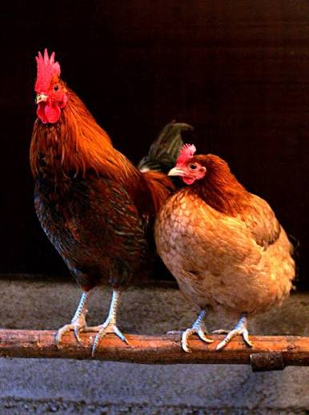

Murgi (chickens) are one of the most common domesticated birds globally, raised primarily for their meat and eggs. They belong to the bird family Phasianidae and are known for their distinct clucking and scratching behaviors while foraging for food. These birds typically feed on grains, seeds, and small insects. While they have wings, their bodies are heavy, which limits them to short, low flights. A healthy murgi can lay hundreds of eggs a year, making them an essential part of agriculture and daily diets in countries like Bangladesh.
